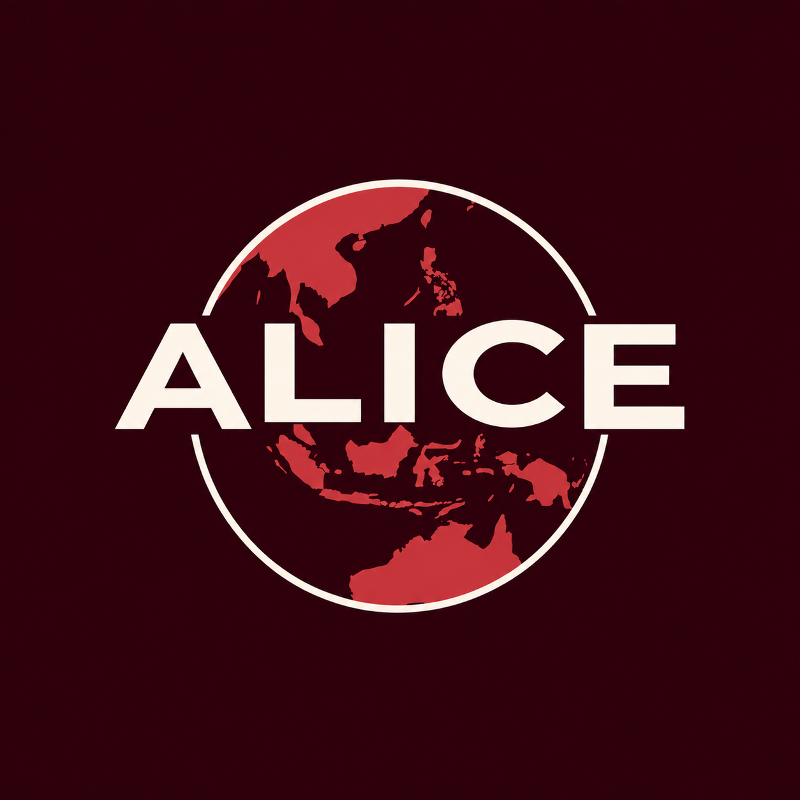
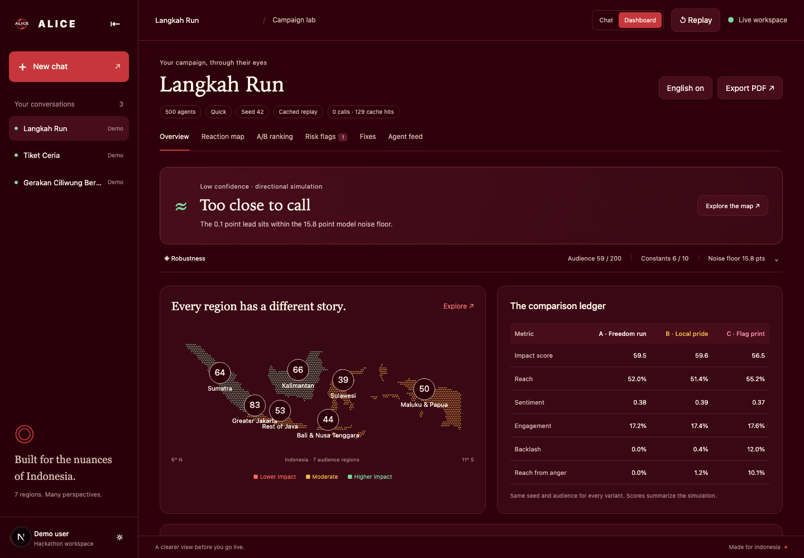

Alice — Campaign rehearsal

A little foresight.
A better first impression.
Rehearse your campaign on a synthetic Indonesia before launch.
Autonomous and Adaptive AI · Deep Domain AI
The decisionThree directions.
One campaign budget.
A campaign manager has to choose a creative direction before media spend. A message that connects in Jakarta can land differently elsewhere.
Alice gives teams a structured way to find and fix that friction.
The productSee how it lands.

Actual live demo result. Synthetic audience; directional, not a forecast.
Our engineLanguage judgment.
Deterministic spread.
Brief → clarify → build the audience
OpenAI reactions → Rust diffusion → segment ranking
Risk scan → rewrite → same-audience rerun
500 or 1,500 agents. Every variant sees the same audience, seed and reaction model. The Rust core never calls an LLM.
An honest baselineWhy not just ask once?
We do.
Every run includes a plain single-call answer. We preserve what it raised, including things Alice does not simulate.
Then show the difference.
Regional margins, reach from anger, stability of the winner, and the cost of a safer rewrite.
A tie is a useful answer.
The live Langkah Run Quick run gave A and B a lead smaller than the measured model noise. Alice reported Low confidence and “Too close to call.”
Three separate checks
200 audience resamples, 10 constants checks, and a fresh reaction sample for the top scorer.
One hard gate
A high-severity risk blocks recommendation, even when that variant has the highest score.
A safer draft can score lower.
In the first live flag-print fix, backlash fell while the impact score also fell. Alice shows both. The original stays intact until a person chooses a new draft.
New reactions include the entire audience, including unaffected controls where present. At most two rounds per flag.
Why IndonesiaCulture is context.
Seven regions, many perspectives
BPS, APJII and Dukcapil reference distributions. Finer audience splits are calibrated estimates.
Local judgment
Indonesian speech registers, calendar moments, SARA and local-norms risk catalog, with English lines for review.
Contracts first.
Evidence after every layer.
Repository instructions and an OpenAI Docs MCP lookup guided the build. Rust tests check determinism and fairness. Browser checks exercise the dashboard in both themes and on mobile.
An integration check caught a tracing key-pool formatting issue. The exporter now uses the selected key, while the browser sees only positions.
Where Alice can be wrongA rehearsal.
Never real public opinion.
Models can carry stereotypes. Network constants are design choices. Nothing is calibrated against actual campaign outcomes yet. The engine repeats exactly for the same reactions; a whole run repeats exactly only from cache.
Next: test against real campaigns and improve the regional data.
A clearer view
before you go live.
Fabian · Rifqi · Malvin · Vincent
Give us a campaign idea. Let’s rehearse it.
Open the app: localhost:3000